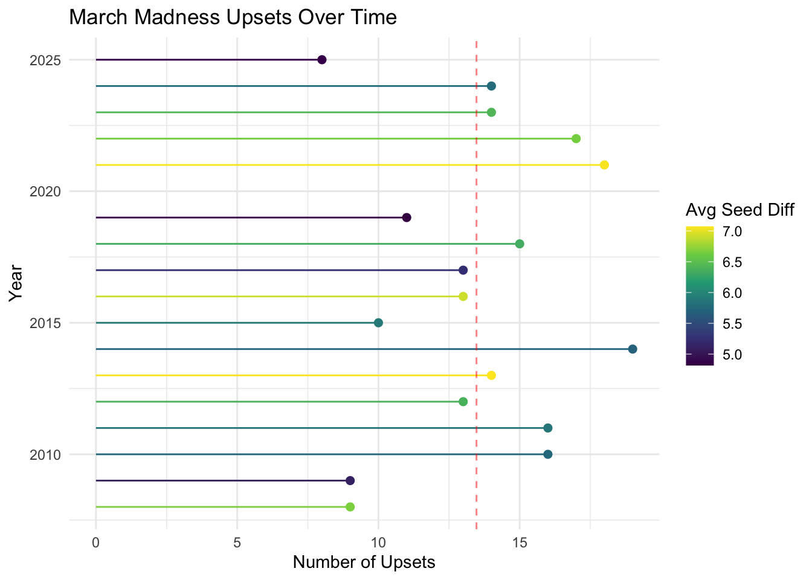
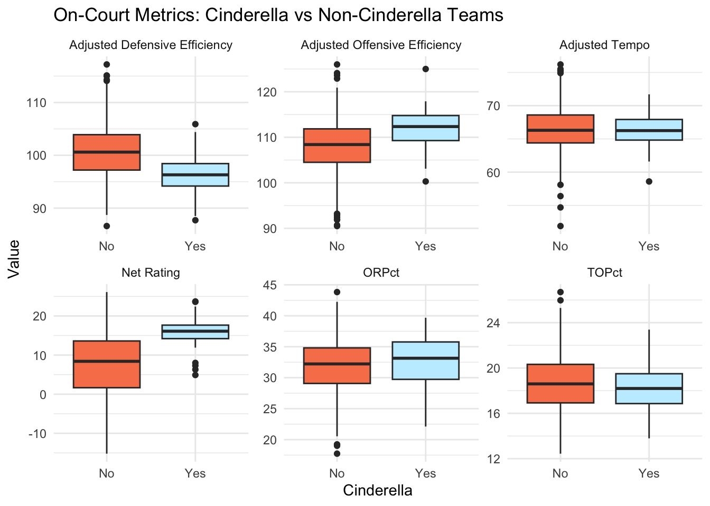
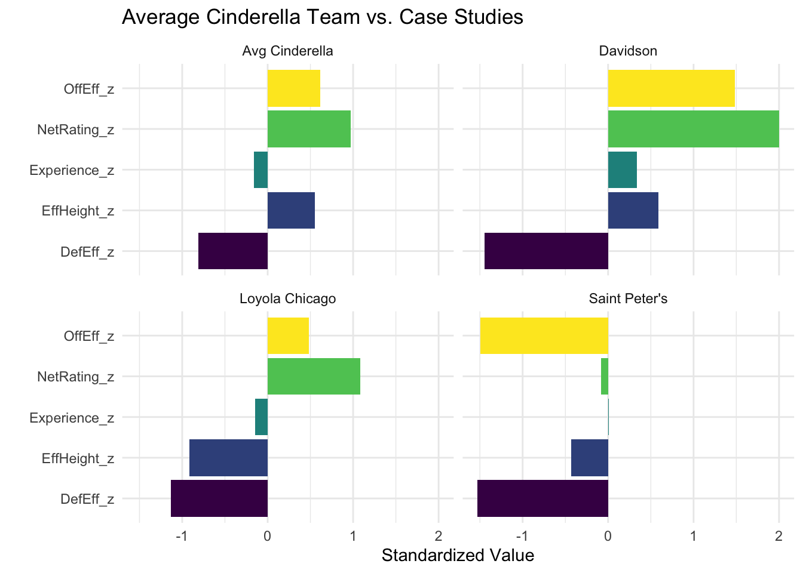

library(tidyverse)
library(readxl)Introduction
The NCAA Men’s Basketball Tournament, commonly known as March Madness, is one of the most widely followed and unpredictable sporting events in the United States. It features 68 teams in a single elimination format, including both nationally recognized programs and lesser-known schools. This structure creates an environment where unexpected outcomes can occur, making the tournament especially exciting for fans filling out brackets. Despite millions of entries each year, no one has ever achieved a perfect bracket.
One of the most defining features of March Madness is the occurrence of upsets, in which a lower seeded teams defeats a higher seeded opponent. In this analysis, an upset is defined as a game where the seed difference is at least three spots. While higher seeded teams are generally expected to perform better, the tournament consistently produces surprising results. This project analyzes factors associated with unexpected success in March Madness, with a focus on “Cinderella teams,” or double-digit seeded teams that win multiple games, and their success is a major reason why March Madness remains so exciting and difficult to predict.
The data used in this analysis comes from two datasets sourced from Kaggle: One focused on upset outcomes, and the other contained team level performance metrics. The upset (Upset Seed Info.csv) dataset includes information on the number of upsets in each tournament, the rounds in which they occurred, and the seed matchups involved. The second dataset (DEV _ March Madness.csv) contains a wide range of team statistics, including both on-court performance metrics and off-court characteristics.
Main Research Question: What team characteristics are associated with unexpected success in March Madness?
Overall, while the tournament is inherently unpredictable, this analysis aims to determine whether underlying patterns exist in the teams that achieve unexpected success. These factors motivate a deeper exploration into the statistical and contextual drivers of upsets and Cinderella runs in March Madness.
Visualizations
# Loading kaggle datasets
upset_seed_info <- read_csv(here::here("posts/final_blog_post/Upset Seed Info.csv"))
dev <- read_csv(here::here("posts/final_blog_post/DEV _ March Madness.csv"))Cleaning datasets
Plot 1
upset_summary <- upset_seed_info |> group_by(YEAR) |>
summarise(num_upsets = n(),
avg_seed_diff = round(mean(`SEED DIFF`, na.rm=TRUE), 3))Plot 2
on_court_performance <- dev |>
filter(`Post-Season Tournament Sorting Index` == 1) |>
select(
Season, `Mapped ESPN Team Name`, Seed,
`Net Rating`, `Adjusted Tempo`,
`Adjusted Offensive Efficiency`,
eFGPct, TOPct, ORPct, FTRate, Off3PtFG, FTPct,
`Adjusted Defensive Efficiency`, DefFT
) |>
mutate(Seed = as.numeric(Seed)) |>
filter(Seed >= 10)
# write_csv(on_court_performance, "on_court_performance.csv")
# read in manually cleaned data from excel
data <- read_excel(here::here("posts/final_blog_post/on_court_performance.xlsx"))
data <- data |> select(-c(`Avg Possession Length (Offense)`, `Avg Possession Length (Defense)`, Bench)) |>
relocate(cinderella, .after = Seed) |>
mutate(cinderella = if_else(cinderella == 1, "Yes", "No"))
# plot dataset
boxplot_data <- data |>
select(
cinderella,
`Net Rating`,
`Adjusted Offensive Efficiency`,
`Adjusted Defensive Efficiency`,
ORPct,
TOPct,
`Adjusted Tempo`
) |>
pivot_longer(-cinderella, names_to = "metric", values_to = "value")Plot 3 & 4
off_court_factors <- dev |> filter(`Post-Season Tournament Sorting Index` == 1) |>
select(
Season, `Mapped ESPN Team Name`, Seed, `Short Conference Name`,
AvgHeight, CenterHeight, PFHeight, SFHeight, SGHeight, PGHeight, EffectiveHeight, Experience, `Active Coaching Length`
) |>
mutate(Seed = as.numeric(Seed)) |>
filter(Seed >= 10) |>
filter(Season >= 2007)
# helper datasets
cinderella_var_data <- data |>
select(Season, `Mapped ESPN Team Name`, cinderella)
off_court_factors <- off_court_factors |>
left_join(cinderella_var_data,
by = c("Season", "Mapped ESPN Team Name"))
power_confs <- c("ACC", "B10", "B12", "SEC", "P12", "BE")
off_court_factors <- off_court_factors |>
mutate(
`Active Coaching Length` = na_if(`Active Coaching Length`, "Unknown"),
`Active Coaching Length` = gsub(" years?| year", "", `Active Coaching Length`),
`Active Coaching Length` = as.numeric(`Active Coaching Length`),
conference_type = if_else(
`Short Conference Name` %in% power_confs, "Power", "Mid-Major"
)
)
# plot data
plot3_data <- off_court_factors |>
select(cinderella, conference_type, Experience, EffectiveHeight) |>
pivot_longer(
cols = -c(cinderella, conference_type),
names_to = "metric",
values_to = "value"
)combined_data <- inner_join(off_court_factors, data,
by = c("Season", "Mapped ESPN Team Name", "Seed", "cinderella"))
scaled_data <- combined_data |>
mutate(
NetRating_z = scale(`Net Rating`),
OffEff_z = scale(`Adjusted Offensive Efficiency`),
DefEff_z = scale(`Adjusted Defensive Efficiency`),
Experience_z = scale(Experience),
EffHeight_z = scale(EffectiveHeight)
)
avg_cinderella <- scaled_data |>
filter(cinderella == "Yes") |>
summarise(
team = "Avg Cinderella",
NetRating_z = mean(NetRating_z, na.rm = TRUE),
OffEff_z = mean(OffEff_z, na.rm = TRUE),
DefEff_z = mean(DefEff_z, na.rm = TRUE),
Experience_z = mean(Experience_z, na.rm = TRUE),
EffHeight_z = mean(EffHeight_z, na.rm = TRUE)
)
case_teams <- scaled_data |>
filter(
(`Mapped ESPN Team Name` == "Davidson" & Season == 2008) |
(`Mapped ESPN Team Name` == "Saint Peter's" & Season == 2022) |
(`Mapped ESPN Team Name` == "Loyola Chicago" & Season == 2018)
) |>
select(team = `Mapped ESPN Team Name`,
NetRating_z, OffEff_z, DefEff_z, Experience_z, EffHeight_z)
# plot data
plot4_data <- bind_rows(case_teams, avg_cinderella) |>
pivot_longer(-team, names_to = "metric", values_to = "value")Plot 1: March Madness Upsets Over Time
ggplot(upset_summary, aes(x = YEAR, y = num_upsets)) +
geom_segment(aes(x = YEAR, xend = YEAR, y = 0, yend = num_upsets,
color = avg_seed_diff)) +
geom_point(aes(color = avg_seed_diff), size = 2) +
scale_color_viridis_c(name ="Avg Seed Diff") +
coord_flip() +
labs(
title = "March Madness Upsets Over Time",
x = "Year",
y = "Number of Upsets"
) +
theme_minimal() +
geom_hline(yintercept = mean(upset_summary$num_upsets),
linetype = "dashed", color = "red", alpha = 0.5)
From the plot, we can see the number of upsets each year on the x-axis, with years ranging from 2008 to 2025 on the y-axis. The year with the fewest upsets is 2025, while 2014 has the most. The dashed red line represents the average number of upsets across all years in the dataset. In addition to the number of upsets, the color of each point represents the average seed difference in those games. For example, if a 12-seed beats a 5-seed, the seed difference is 7. Based on this, we see larger average seed differences in years like 2021 and 2013, and smaller differences in years like 2025 and 2009.
Looking more closely at 2025, there are not only fewer upsets, but the upsets that do occur tend to have smaller seed differences. Tournaments like this are often described as “chalky,” meaning that the higher seeded teams generally perform as expected. On the other end, years like 2021 and 2022 show both a higher number of upsets and larger seed differences. One possible explanation for this is the impact of COVID-19 on recruiting and player development. During this time, recruiting was more limited and disrupted, which may have led to better players ending up at smaller program, so then those smaller teams could be more likely to become Cinderella teams.
Overall, this plot suggests that the number of upsets varies from year to year without a clear trend, which indicates that upset frequency alone may not be enough to explain unexpected success. This reinforces the idea to look deeper into team characteristics.
Plot 2: On-Court Metrics: Cinderella vs Non-Cinderella Teams
ggplot(boxplot_data, aes(x = cinderella, y = value, fill = cinderella)) +
geom_boxplot() +
facet_wrap(~metric, scales = "free") +
labs(
title = "On-Court Metrics: Cinderella vs Non-Cinderella Teams",
x = "Cinderella",
y = "Value"
) +
theme_minimal() +
theme(legend.position = "none") +
scale_fill_manual(values = c(
"Yes" = "#C3EEFF",
"No" = "#F88158"
))
The plot compares double-digit seeded teams across six different metrics that are commonly used to evaluate basketball performance. These include metrics such as Adjusted Defensive Efficiency, Adjusted Offensive Efficiency, and Net Rating. Looking at the distributions, Cinderella teams tend to have higher Adjusted Offensive Efficiency and a noticeably higher Net Rating compared to non-Cinderella teams. However, somewhat surprisingly, they appear to have a worse Adjusted Defensive Efficiency. For the remaining metrics, the differences between the two groups are minuscule.
One possible explanation for the higher Net Rating is that Cinderella teams are more likely to come from the stronger end of the double-digit seed range, such as 10, 11, or 12 seeds, rather than 15 or 16 seeds. Since these teams are generally stronger overall, this could help explain their higher Net Rating. More importantly, the results suggest that offensive performance may play a larger role than defense in these unexpected tournament runs. Teams that are highly efficient offensively can “get hot” and score at a high level, which is especially impactful in a single elimination setting where one strong performance can be enough to advance. Even if these teams are weaker defensively, a strong offense may allow them to win multiple games.
Overall, this plot suggests that for double-digit seeded teams, offensive strength is more strongly associated with making a Cinderella run than defensive performance.
Plot 3: Average Cinderella Team vs. Case Studies
ggplot(plot4_data, aes(x = metric, y = value, fill = metric)) +
geom_col(show.legend = FALSE) +
facet_wrap(~team) +
coord_flip() +
labs(
title = "Average Cinderella Team vs. Case Studies",
x = "",
y = "Standardized Value"
) +
theme_minimal() +
scale_fill_viridis_d()
The plot includes several of the metrics from the previous plots, such as Adjusted Offensive Efficiency, Adjusted Defensive Efficiency, Net Rating, Effective Height, and Experience. All values are standardized using z-scores, meaning a value of 0 represents the average among all double-digit seeded teams. This allows for direct comparison across teams and metrics. Looking first at the average Cinderella team, the values in this plot generally align with the patterns observed in the previous plots. Showing above average Offensive Efficiency and Net Rating, with moderate differences in other metrics.
Moving to the case studies, each team tells a slightly different story. Davidson, before the tournament was considered a very strong double-digit seeded team, but is now famous because of their star player Stephen Curry. They closely follow the overall Cinderella profile but at a more extreme level. They were significantly above average offensively and below average defensively, reinforcing the idea that strong offensive performance can drive unexpected tournament success. This also supports the perception that Davidson may have been under-seeded as they performed more like a higher-seeded team.
Saint Peter’s, however, stands out as the most unusual case here. As a 15-seed that reached the Elite Eight, they were below average in both offensive and defensive efficiency compared to other double-digit seeded teams. This makes their run especially surprising, as they do not fit the statistical profile associated with most Cinderella teams. Their success highlights how unpredictable the tournament can be, especially in a single elimination format.
Overall, these case studies reinforce the idea that offensively strong teams are more likely to achieve unexpected success in March Madness. However, Saint Peter’s demonstrates that offensive efficiency is not the only path to a Cinderella run. These examples show that while general patterns exist, individual Cinderella runs can vary widely, adding to the unpredictability that defines March Madness.
Conclusion
Overall, this analysis suggests that offensive efficiency is one of the strongest factors associated with unexpected success in March Madness. Among double-digit seeded teams that go on Cinderella runs, those that are more offensively oriented tend to perform better than those that rely primarily on defense. The main takeaway is that teams capable of scoring efficiently and “getting hot” are more likely to achieve unexpected success in a single-elimination setting like March Madness.
There are several limitations to this analysis. The data only covers a relatively recent time period, and only a small subset of the available metrics was used. Other variables could provide stronger explanations for unexpected success but were not explored here.
If given more time, this analysis could be extended by looking deeper into specific offensive metrics could help identify if certain aspects of offense are more important for Cinderella teams. Additionally, other influences to look at could be the more recent changes in college basketball, such as the transfer portal and NIL, as they could also influence the likelihood of upsets in future tournaments.